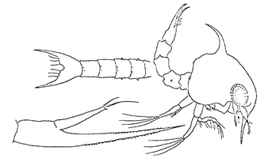

Fiddler Crabs
Uca minax
Red-jointed Fiddler Crab
Type
Information
Photos
Video
Art
References
Species List
Type Description
Gelasimus minax
Le Conte, J. (1855) On a new species of
Gelasimus
.
Proceedings of the Academy of Natural Sciences of Philadelphia
7:402–403.
Information
Subgenus
Minuca
Common Names
Red-jointed Fiddler Crab, Brackish Water Fiddler Crab
Synonyms, Alternate Spellings, & Name Forms
Gelasimus minax
,
Gelasimus vocator
var.
minax
,
Uca (Minuca) [minax] minax
,
Uca (Minuca) minax
,
Uca mimax
,
Uca minas
,
Uca minax
,
Uca vocator
var.
minax
Geographic Range
Western Atlantic: USA (Massachusetts to Northeast Florida, Northwest Florida to Louisiana, a few scattered locations in Texas)
Download SVG line map of ranges.
Map data derived from:
Hopkins & Thurman (2010)
External Links
Encyclopedia of Life
Wikipedia
iNaturalist
NCBI Taxonomy Browser/Genbank
GBIF
Photos
Video
No videos available at this time.
Art

References
Abbott, J.F. (1913) The effect of distilled water upon the fiddler crab.
Biological Bulletin
24(3):169–174.
Abramowitz, A.A. (1937) The chromatophorotropic hormone of the Crustacea: Standardization, properties and physiology of the eye-stalk glands.
Biological Bulletin
72(3):344–365.
Abramowitz, A.A. (1937) The comparative physiology of pigmentary responses in the Crustacea.
Journal of Experimental Zoology
76(3):407–422.
Abramowitz, A.A. (1938) The similarity between the hypophyseal chromatphorotropic horomone and the chromatophorotropic hormone of the crustacean eyestalk.
Physiological Zoology
11(3):299–311.
Abreu, V. (1975) Fiddlers on the shorelines.
Of Sea and Shore
6(3):139–140.
Ahmed, M. (1976) A study of the normal and abberrant sexual types of the Venezuelan fiddler crabs
Uca cumulanta
and
U. rapax
.
Bulletin of Marine Science
26(4):499–505.
Aikawa, H. (1942) Systemic Studies of the Plankton Organisms Occurring in Iwayama Bay, Palao VI. On Brachyuran Larvae from the Palao Islands (South Sea Islands).
Palao Tropical Biological Station Studies
2(3):585–611.
Allen, E.A., and H.A. Curran (1973) Lebensspuren of selected decapod crustaceans in recent lagoon margin and estuarine environments.
Abstracts with Programs
4(1):1.
Allen, E.A., and H.A. Curran (1974) Biogenic sedimentary structures produced by crabs in lagoon margin and salt marsh environments near Beaufort, North Carolina.
Journal of Sedimentary Petrology
44(2):538–548.
Altevogt, R. (1957) Beiträge zur Biologie und Ethologie von
Dotilla blanfordi
Alcock und
Dotilla myctiroides
(Milne Edwards) (Crustacea Decapoda).
Zeitschrift für Morphologie und Ökologie der Tiere
46(4):369–388.
Altevogt, R. (1972) Physiological inter-relations of display and locomotion in fiddler crabs: An evolutionary aspect.
Journal of the Marine Biological Association of India
14(2):456–467.
Aspey, W.P. (1971) Inter-species sexual discrimination and approach-avoidance confict in two species of fiddler crabs,
Uca pugnax
and
Uca pugilator
.
Animal Behaviour
19(4):669–676.
Aurivillius, C.W.S. (1893) Die Beziehungen der Sinnesorgane amphibischer Decapoden zur Lebensweise und Athmung.
Nova Acta Regiæ Societatis Scientiarum Upsaliensis. Seriei 3
16(9):1–48.
Avent, R.M., Jr. (1974) The effects of hydrostatic pressure on living aquatic organisms. VIII. Behavioral and metabolic responses of
Uca pugilator
to variations in hydrostatic pressure and temperature.
Internationale Revue der gesamten Hydrobiologie
59(2):219–238.
Baldwin, G.F., and L.B. Kirschener (1976) Sodium and chloride regulation in
Uca
adapted to 10% sea water.
Physiological Zoology
49(2):172–180.
Barnwell, F.H. (1966) Daily and tidal patterns of activity in individual fiddler crab (genus
Uca
) from the Woods Hole region.
Biological Bulletin
130(1):1–17.
Barnwell, F.H. (1968) The role of rhythmic systems in the adaptation of fiddler crabs to the intertidal zone.
American Zoologist
8(3):569–583.
Barnwell, F.H. (1976) Variation in the form of the tide and some problems it poses for biological timing systems. Pp. 161–187 in
Biological Rhythms in the Marine Environment
, P.J. DeCoursey, ed., Volume 4. Columbia, SC: University of South Carolina Press.
Basan, P.B., and R.W. Frey (1977) Actual-palaeontology and neoichnology of salt marshes near Sapelo Island, Georgia. Pp. 41–70 in
Trace Fossils 2
, T.P. Crimes and J.C. Harper, eds. Liverpool: Seel House Press.
Bayley, I.A.E. (1972) Salinity tolerance and osmotic behavior of animals in athalassic saline and marine hypersaline waters.
Annual Review of Ecology and Systematics
3:233–268.
Behre, E.H. (1950) Annotated list of the fauna of the Grand Isle region.
Occasional Papers of the Marine Lab of Louisiana State University
6:1–66.
Beinlich, B., and H.-O. von Hagen (2006) Materials for a more stable subdivision of the genus
Uca
Leach.
Zoologische Mededelingen
80(4):9–32.
Bishop, G.A. (1993) History of North Amercann decapod paleocarcinology. Pp. 293–320 in
Crustacean Issues 8: History of Carcinology
, F. Truesdale, ed. Rotterdam: Balkema.
Bliss, D.E. (1968) Transition from water to land in decapod crustaceans.
American Zoologist
8(3):355–392.
Borgianini, S.A., J. Jurisa, R. Styles, and R.J. Brodie (2005) A model describing the dispersal capabilities of the red-jointed fiddler crab (
Uca minax
LeConte) postlarvae in a river-dominated estuary.
Integrative and Comparative Biology
45(6):1112.
Borgianini, S.A., G. Sproul, M.M. Flenniken, M.C. Sutton, and R.J. Brodie (2007) Cost of living differences among fiddler crab populations along a tidal river.
Integrative and Comparative Biology
47(Supplement):e11.
Borgianini, S.A., M.C. Sutton, M.M. Flenniken, and R.J. Brodie (2007) Behavioral, developmental and physiological constraints on the distribution of fiddler crabs (
Uca minax,
Leconte, 1855) within a river-dominated sstuary.
Integrative and Comparative Biology
47(Supplement):e161.
Bott, R. (1954) Dekapoden (Crustacea) aus El Salvador. 1. Winkerkrabben (
Uca
).
Senckenbergiana biologica
35(3–4):155–180.
Bourdon, R., and T.E. Bowman (1970) Western Atlantic species of the parasitic genus
Leidya
(Epicaridea: Bopyridae).
Proceedings of the Biological Society of Washington
83:409–424.
Brodie, R.J. (2004) Life on the wedge: Survival of low salinity conditions in larvae of the fiddler crab
Uca minax
.
Integrative and Comparative Biology
44(6):530.
Brodie, R.J., and J. Godley (2006) The effect of summer storms on the recruitment success of fiddler crabs.
Integrative and Comparative Biology
46(Supplement):317.
Brodie, R.J., and J.L. Staton (2004) Re-invasion of low salinity adult habitats following marine planktonic development in fiddler crabs.
Ecological Society of America Annual Meeting Abstracts
89:64.
Brodie, R.J., and J.S. Staton (2003) Freshwater invasion and larval settlement: Reinvasion of low salinity adult habitats after marine planktonic development in the fiddler crabs
Uca pugilator
,
Uca pugnax
and
Uca minax
.
Integrative and Comparative Biology
43(6):1080.
Brown, S.K., and R.E. Loveland (1980) Reproductive cycles of the fiddler crabs
Uca minax
and
Uca pugnax
.
American Zoologist
20(4):957.
Bumpus, H.C. (1898) The breeding of animals at Woods Hole during the months of June, July, and August, 1898.
Science
8(207):850–858.
Coues, E. (1871) Notes on the natural history of Fort Macon, N.C., and vicinity (No. 2.).
Proceedings of the Academy of Natural Sciences of Philadelphia
1871:120–148.
Coward, S.J., H.C. Gerhardt, and D.T. Crockett (1970) Behavioral variation in natural populations of two species of fiddler crabs (
Uca
) and some preliminary observations on directed modifications.
Journal of Biological Psychology
12(1):24–31.
Crane, J. (1941) Eastern Pacific Expeditions of the New York Zoological Society. XXVI. Crabs of the genus
Uca
from the west coast of Central America.
Zoologica NY
26:145–208.
Crane, J. (1943) Crabs of the genus
Uca
from Venezuela.
Zoologica NY
28:33–44.
Crane, J. (1943) Display, breeding and relationships of fiddler crabs (Brachyura, Genus
Uca
) in the Northeastern United States.
Zoologica NY
28:217–223.
Crane, J. (1944) On the color changes of fiddler crabs (genus
Uca
) in the field.
Zoologica NY
29:161–168.
Crane, J. (1957) Basic patterns of display in fiddler crabs (Ocypodidae, Genus
Uca
).
Zoologica NY
42:69–82.
Crane, J. (1975)
Fiddler Crabs of the World: Ocypodidae: Genus Uca
. Princeton, NJ: Princeton University Press.
Croker, R.A., and A.J. Wilson (1965) Kinetics and effects of DDT in a tidal marsh ditch.
Transactions of the American Fisheries Society
94(2):152–159.
Croll, G.A., and J.B. McClintock (2000) An evaluation of lekking behavior in the fiddler crab
Uca
spp.
Journal of Experimental Marine Biology and Ecology
254(1):109–121.
Croll, G.A., and J.B. McClintock (2000) Sexual dimorphism, cheliped assymetry and selection pressure in
Uca
spp.
American Zoologist
40(6):984.
Doherty, J.A. (1978) Temperature effects on the courtship wave display in fiddler crabs.
American Zoologist
18(3):621.
Dunham, D.W., and S.L. Gilchrist (1988) Behavior. Pp. 97–138 in
Biology of the Land Crabs
, W.W. Burggren and B.R. McMahon, eds. Cambridge: Cambridge University Press.
Edney, E.B. (1961) The water and heat relationships of fiddler crabs (
Uca
spp.).
Transactions of the Royal Society of South Africa
36(2):71–91.
Edwards, G.A. (1950) The influence of eyestalk removal on the metabolism of the fiddler crab.
Physiologia Comparata et Oecologia
2:34–50.
Ellis, L.L., Jr., and D.L. Claybrook (1979) An in-vitro analysis of volume regulation in the hepatopancreas of the fiddler crab
Uca minax
.
American Zoologist
19(3):972.
Ellis, L.L., Jr., and D.L. Claybrook (1980) Partial characterization of glutamate dehydrogenase from
Uca minax
.
American Zoologist
20(4):797.
Engel, D.W. (1973) The radiation sensitivities of 3 species of fiddler crabs
Uca pugilator
Uca pugnax
and
Uca minax
.
Chesapeake Science
14(4):289–291.
Engel, D.W., J.W. Angelovic, and J.C. White, Jr (1971) The radiation sensitivities of selected estuarine Crustacea.
Radiation Research
47(1):301.
Feest, J. (1969) Morphophysiologische Untersuchungen zur Ontogenese und Fortpflanzungsbiologie von
Uca annulipes
und
Uca triangularis
mit Vergleichsbefunden an
Ilyoplax gangetica
.
forma et functio
1:159–225.
Fielder, D.R., K.R. Rao, and M. Fingerman (1971) A female-limited lipoprotein and the diversity of hemocyanin components in the dimorphic variants of the fiddler crab,
Uca pugilator
, as revealed by disc electrophoresis.
Comparative Biochemistry and Physiology
39B(2):291–297.
Florkin, M. (1960) Ecology and metabolism. Pp. 395–410 in
The Physiology of Crustacea
, T.H. Waterman, ed., Volume I. New York: Academic Press.
Fotheringham, N., and S.L. Brunenmeister (1975)
Common Marine Invertebrates of the Northwestern Gulf Coast
. Houston, TX: Gulf Publishing Company.
Fowler, H.W. (1911) The fishes of Delaware.
Proceedings of the Academy of Natural Sciences of Philadelphia
63:3–16.
Fowler, H.W. (1912) The Crustacea of New Jersey. Pp. 29–650 in
Annual Report of the New Jersey State Museum 1911
. Trenton, N.J.: MacCrellish & Quigley.
Full, R.J., and C.F. Herreid, II (1980) Energetics of running sideways.
American Zoologist
20(4):909.
George, J.L., R.F. Darsie, Jr., and P.F. Springer (1957) Effects on wildlife of aerial applications of Strobane, DDT and BHC to tidal marshes in Deleware.
Journal of Wildlife Management
21(1):42–53.
Gibbs, P.E. (1974) Notes on
Uca burgersi
Holthuis (Decapoda, Ocypodidae) from Barbuda, Leeward Islands.
Crustaceana
27(1):84–91.
Gibbs, P.E., and G.W. Bryan (1972) A study of strontium, magnesium and calcium in the environment and exoskeleton of decapod crustaceans with special reference to
Uca burgersi
on Barbuda, West Indies.
Journal of Experimental Marine Biology and Ecology
9(1):97–110.
Giblock, S.M., and D. Crain (2013) Fiddler crabs (
Uca pugilator
) as bioindicators of environmental health in coastal estuarine communities of Beaufort, South Carolina.
Interdisciplinary Journal of Undergraduate Research
2(13):1–11.
Gilchrist, S.L. (1988) Natural histories of selected terrestrial crabs. Pp. 382–390 in
Biology of the Land Crabs
, W.W. Burggren and B.R. McMahon, eds. Cambridge: Cambridge University Press.
Gosner, K.L. (1978)
A Field Guide to the Atlantic Seashore from the Bay of Fundy to Cape Hatteras
, Volume 24. Boston: Houghton Mifflin Company.
Grant, G.S. (1992) Brown thrasher preys on fiddler crab.
Chat
56(1):6.
Gray, E.H. (1942) Ecological and life history aspects of the red-jointed fiddler crab,
Uca minax
(Le Conte), region of Solomons Island, Maryland.
Chesapeake Biological Laboratory Publication
51:3–20.
Gray, I.E. (1957) A comparative study of the gill area of crabs.
Biological Bulletin
112(1):34–42.
Green, J.W., M. Harsch, L. Barr, and C.L. Prosser (1959) The regulation of water and salt by the fiddler crabs,
Uca pugnax
and
Uca pugilator
.
Biological Bulletin
116(1):70–87.
Greenspan, B.N. (1975) Male reproductive strategy in the communal courtship system of the fiddler crab,
Uca rapax
. Pp. 196: Rockefeller University).
Grimes, B.H. (1976) Notes on the distribution of
Hyalophysa
and
Gymnodinioides
on crustacean hosts in coastal North Carolina and a description of
Hyalophysa trageri
sp. n.
Journal of Protozoology
23(2):246–251.
Günther, H.-J. (1963) Untersuchungen zur Verbreitung und Ökologie von
Uca tangeri
an der SW-Iberischen Küste.
Zeitschrift für Morphologie und Ökologie der Tiere
53(3):242–310.
Hannan, J.V., and D.H. Evans (1973) Water permeability in some euryhaline decapods and
Limulus polyphemus
.
Comparative Biochemistry and Physiology
44A(4):1199–1213.
Hartnoll, R.G. (1988) Evolution, systematics, and geographical distribution. Pp. 6–54 in
Biology of the Land Crabs
, W.W. Burggren and B.R. McMahon, eds. Cambridge: Cambridge University Press.
Hay, W.P., and C.A. Shore (1915–1916) The decapod crustaceans of Beaufort, N. C., and the surrounding region.
Bulletin of the United States Bureau of Fisheries
35:369–475.
Headstrom, R. (1979)
Lobsters, Crabs, Shrimps, and Their Relatives
. London: A.S. Barnes.
Heard, R.W., Jr. (1970) Parasites of the clapper rail,
Rallus longirostris
Boddaert. II. Some trematodes and cestodes from
Spartina
marshes of the eastern United States.
Proceedings of the Helminthological Society of Washington
37(2):147–153.
Heard, R.W., Jr. (1976) Microphallid trematode metacercariae in fiddler crabs of the genus
Uca
Leach 1814 from the northern Gulf of Mexico. Pp. 189: University of Southern Mississippi).
Heard, R.W., Jr. (1977) (Review) Jocelyn Crane, Fiddler Crabs of the World. Ocypodidae: Genus
Uca
.
Northeast Gulf Science
1(1):52–53.
Heard, R.W., Jr., and R.M. Overstreet (1983) Taxonomy and life histories of two North American species of "Carneophallus" (=
Microphallus
) (Digenea: Microphallidae).
Proceedings of the Helminthological Society of Washington
50(1):170–174.
Heilprin, A. (1888)
The Animal Life of our Sea-Shore
. Philadelphia: J.B. Lippincott Company.
Herreid, C.F., II (1969) Water loss of crabs from different habitats.
Comparative Biochemistry and Physiology
28(2):829–839.
Holmes, S.J. (1904) On some new or imperfectly known species of West American Crustacea.
Proceedings of the California Academy of Sciences. Third Series. Zoology
3(12):307–331.
Honegger, H.-W. (1973) Rhythmic activity responses of the fiddler crab
Uca crenulata
to artifical tides and artificial light.
Marine Biology
21(3):196–202.
Honegger, H.-W. (1973) Rhythmic motor activity responses of the California fiddler crab
Uca crenulata
to artifical light conditions.
Marine Biology
18(1):19–31.
Hunter, W.S., and W.B. Vernberg (1953) Early stages in the life cycle of the trematode,
Gynaecotyla adunca
(Linton, 1905).
Transactions of the American Microscopical Society
72(2):163–170.
Huxley, J.S. (1924) Constant differential growth-ratios and their significance.
Nature
114(2877):895–896.
Huxley, J.S. (1927) Further work on heterogonic growth.
Biologisches Zentralblatt
47:151–163.
Huxley, J.S. (1932)
Problems of Relative Growth
. London: Dial Press.
Hyatt, G.W. (1973) Physiological and behavioural studies of color vision in fiddler crabs (Brachyura, Ocypodidae, genus
Uca
). Pp. 90 (Urbana-Champaign: University of Illinois).
Hyatt, G.W. (1975) Physiological and behavioral evidence for color discrimination by fiddler crabs (Brachyura, Ocypodidae, genus
Uca
). Pp. 333–365 in
Physiological Ecology of Estuarine Organisms
, F.J. Vernberg, ed. Columbia, SC: University of South Carolina Press.
Hyatt, G.W. (1977) Quantitative analysis of size-dependent variation in the fiddler crab wave display (
Uca pugilator
, Brachyura, Ocypodidae).
Marine Behaviour and Physiology
5(1):19–36.
Hyman, O.W. (1920) Adventures in the life of a fiddler crab.
Annual Report of the Smithsonian Institution for 1920
1920:443–459.
Hyman, O.W. (1920) The development of
Gelasimus
after hatching.
Journal of Morphology
33(2):485–501.
Jansen, P. (1970) Phsyiologisch-ökologische Untersuchungen zum "Posen" von
Uca tangeri
.
forma et functio
2:58–100. {Eco-physiological studies on the "posing" behavior of
Uca tangeri
}
Kerwin, J.A. (1971) Distribution of the fiddler crab (
Uca minax
) in relation to marsh plants within a Virginia estuary.
Chesapeake Science
12(3):180–183.
Kingsley, J.S. (1878) List of Decapod Crustacea of the Atlantic coast, whose range embraces Fort Macon.
Proceedings of the Academy of Natural Sciences of Philadelphia
30(2):316–330.
Kingsley, J.S. (1879) On a collection of Crustacea from Virginia, North Carolina, and Florida, with a review of the genera
Crangonidæ
and
Palæmonidæ
.
Proceedings of the Academy of Natural Sciences of Philadelphia
31(3):383–427.
Kingsley, J.S. (1880) Carcinological notes, No. II.-Revision of the Gelasimi.
Proceedings of the Academy of Natural Sciences of Philadelphia
1880(1):135–155.
Kingsley, J.S. (1880) On a collection of Crustacea from Virginia, North Carolina, and Florida, with a revision of the genera of Crangonidæ and Palæmonidæ.
Proceedings of the Academy of Natural Sciences of Philadelphia
1879:383–427.
Kraus, D.B. (1982) The burrow as a resource for reproduction and molting in the fiddler crab
Uca minax
.
American Zoologist
22(4):869.
Krebs, C.T. (1976) Population dynamics and energetics of the fiddler crab
Uca pugnax
and the effect of contamination with chlorinated hydrocarbons from sewage. Pp. 154: Boston University).
Krebs, C.T., I. Valiela, G.R. Harvey, and J.M. Teal (1974) Reduction of field populations of fiddler crabs by uptake of chlorinated hydrocarbons.
Marine Pollution Bulletin
5(9):140–142.
Kurata, H. (1970)
Studies on the life histories of decapod Crustacea of Georgia
: University of Georgia, Marine Inst. Publ. Sapelo Island.
Landstorfer, R.B., and C.D. Schubart (2010) A phylogeny of Pacific fiddler crabs of the subgenus
Minuca
(Crustacea, Brachyura, Ocypodidae:
Uca
) with the description of a new species from a tropical gulf in Pacific Costa Rica.
Journal of Zoological Systematics and Evolutionary Research
48(3):214–218.
Le Conte, J. (1855) On a new species of
Gelasimus
.
Proceedings of the Academy of Natural Sciences of Philadelphia
7:402–403.
Lee, R.F., J.W. Conner, D.S. Page, L.E. Ray, and C.S. Giam (1982) Cytochrome P-450 dependent mixed-function oxygenase systems in marsh crabs. Pp. 145–159 in
Physiological Mechanisms of Marine Pollutant Toxicity
, W.B. Vernberg, A. Calabrese, F.P. Thurnberg and F.J. Vernberg, eds. New York: Academic Press.
Leidy, J. (1855) Contributions toward a knowledge of the marine invertebrate fauna of the coasts of Rhode Island and New Jersey.
Journal of the Academy of Natural Sciences in Philadelphia (Series 2)
3:135–152.
Lesser, C.R., F.J. Murphey, and R.W. Lake (1976) Some effects of grid system mosquito control ditching on a salt marsh biota in Deleware.
Mosquito News
36(1):69–77.
Lockwood, A.P.M. (1962) The osmoregulation of Crustacea.
Biological Reviews
37(2):257–305.
Lockwood, A.P.M. (1967)
Aspects of the Physiology of Crustacea
. San Francisco, CA: W. H. Freeman and Company.
Maccagno, T. (1928) Crostacei Decapodi. Le specie del genere
Uca
Leach conservate nel Regio Museo Zoologico di Torino.
Bollettino dei Musei di Zoologia ed Anatomia comparata della R. Università di Torino
41(11):1–52.
Mace, D.S., Jr., and L. McGraw, Jr. (1985) A confirmation of the occurrence of
Uca minax
LeConte (Ocypodidae) in Texas.
Southerwestern Naturalist
30(1):148.
Macnae, W. (1968) A general account of the fauna and flora of mangrove swamps and forests in the Indo-West-Pacific region. Pp. 73–270 in
Advances in Marine Biology
, F.S. Russell and M. Yonge, eds., Volume 6. London: Academic Press.
Mangum, C.P. (1993) Structural polymorphisms of fiddler crab hemocyanins.
American Zoologist
33(5):64A.
Mayer, A.G. (1905)
Sea-Shore Life: The Invertebrates of the New York Coast and the Adjacent Coast Region
. New York: New York Zoological Society.
McCarty, N.A., R.D. Roer, and R.B. Humm (1985) Salinity preference behavior of the fiddler crab,
Uca minax
.
American Zoologist
25(4):37A.
McFadden, A., and C.L. Thurman, II (2003) Osmoregulation by fiddler crabs (genus
Uca
) from California and South Florida.
Integrative and Comparative Biology
43(6):1044.
Miller, D.C. (1961) The feeding mechanism of fiddler crabs, with ecological considerations of feeding adaptations.
Zoologica NY
46:89–100.
Miller, D.C., and F.J. Vernberg (1967) Some thermal requirements of temperate and tropical zone fiddler crabs influencing geographic distribution.
American Zoologist
7(4):766.
Miller, D.C., and F.J. Vernberg (1968) Some thermal requirements of fiddler crabs of the temperate and tropical zones and their influence on geographic distribution.
American Zoologist
8(3):459–469.
Miller, K.G., and D. Maurer (1973) Distribution of the fiddler crabs,
Uca pugnax
and
Uca minax
, in relation to salinity in Delaware rivers.
Chesapeake Science
14(3):219–221.
Mraz, J., C.L. Thurman, II, C. Bennett, and R.J. Brodie (2005) Osmotic tolerance in meglopal and adult crabs of
U. minax
: Can early life stages withstand the same regimes as adults?
Integrative and Comparative Biology
45(6):1169.
Nimmo, D.R., P.D. Wilson, R.R. Blackman, and A.J. Wilson, Jr. (1971) Polychlorinated biphenyl absorbed from sediments by fiddler crabs and pink shrimp.
Nature
231(5297):50–52.
Nobili, G. (1897) Decapodi e Stomatopodi raccolti dal Dr. Enrico Festa nel Darien, a Curaçâo, La Guayra, Porto Cabello, Colon, Panama, ecc.
Bollettino dei Musei di Zoologia ed Anatomia comparata della R. Università di Torino
12(280):1–8.
Nobili, G. (1901) Viaggio del Dr. Enrico Festa nella Repubblica dell'Ecuador e regioni vicine. XXIII. Decapodi e Stomatopodi.
Bollettino dei Musei di Zoologia ed Anatomia comparata della R. Università di Torino
16(415):1–58.
Odum, H.T. (1957) Biochemical deposition of strontium.
Publications of the Institute of Marine Science
4(2):38–114.
Ohno, K., K. Wada, and M. Kamada (2006) Habitat use by the rare fiddler crab
Uca arcuata l
iving in an estuarine salt marsh.
Japanese Journal of Benthology
61:8–15. {大野恭子, 和田恵次 and 鎌田磨人} {河口域塩性湿地に生息する稀少カニ類シオマネキの生息場所利用}
Oliveira, L.P.H.d. (1939) Contribuição ao conhecimento dos crustaceos do Rio de Janeiro. Genero
Uca
(Decapoda: Ocypodidae).
Memórias do Instituto Oswaldo Cruz
34(1):115–148.
Oliveira, L.P.H.d. (1939) Observações sobre a biologia dos adultos do genero
Uca
Leach, 1814. Pp. 490–497 in
"Livro de homenagem" aos professores Alvaro e Miguel Ozorio de Almeida
, A.O.d. Almeida and M.O.d. Almeida, eds. Rio de Janeiro: Instituto Oswaldo Cruz.
Ono, Y. (1965) On the ecological distribution of ocypoid crabs in the estuary.
Memoirs of the Faculty of Science, Kyushu University. Series E (Biology)
4E(1):1–60.
Ortmann, A.E. (1894) Die Decapoden-Krebse des Strassburger Museums, mit besonderer Berücksichtigung der von Herrn Dr. Döderlein bei Japan und bei den Liu-Kiu-Inseln gesammelten und zur Zeit im Strassburger Museum aufbewahrten Formen. VIII. Abtheilung: Brachyura (Brachyura genuina Boas) III. Unterabtheilung: Cancroidea, 2. Section: Canerinea, 2. Gruppe: Catametopa.
Zoologische Jahrbücher. Abtheilung für Systematik, Geographie und Biologie der Thiere
7(5):683–772.
Ortmann, A.E. (1897) Carcinologische Studien.
Zoologische Jahrbücher. Abtheilung für Systematik, Geographie und Biologie der Thiere
10(3):258–372.
Overstreet, R.M. (1983) Metazonan symbionts of crustaceans. Pp. 155–250 in
The Biology of Crustacea, Volume 6. Pathobiology
, A.J. Provenzano, Jr., ed., Volume 6. New York: Academic Press.
Palmer, J.D. (1973) Tidal rhythms: The clock control of the rhythmic physiology of marine organisms.
Biological Reviews
48(3):377–418.
Passano, L.M. (1953) Neurosecretory control of molting in crabs by the X-organ sinus gland complex.
Physiologia Comparata et Oecologia
3:155–189.
Passano, L.M. (1960) Low temperature blockage of molting in
Uca pugnax
.
Biological Bulletin
118(1):129–136.
Paulmier, F.C. (1905) Higher Crustacea of New York City.
New York State Museum Bulletin
(91):117–189.
Pearse, A.S. (1928) The ecology of certain estuarine crabs at Beaufort, N.C.
Journal of the Elisha Mitchell Scientific Society
44(2):230–237.
Powers, L.W. (1975) The Fiddler Crab Burrow: A Study in Behavioral Ecology. Pp. 213 (Austin, Texas: University of Texas at Austin).
Powers, L.W. (1977) A catalogue and bibliography to the crabs (Brachyura) of the Gulf of Mexico.
Contributions in Marine Science
20(Supplement):1–190.
Powers, L.W., and D.E. Bliss (1983) Terrestrial adaptations. Pp. 271–333 in
The Biology of Crustacea, Volume 8: Environmental Adaptations
, F.J. Vernberg and W.B. Vernberg, eds., Volume 8. New York: Academic Press.
Rathbun, M.J. (1897) List of the decapod Crustacea of Jamaica.
Annals of the Institute of Jamaica
1(1):1–49.
Rathbun, M.J. (1900) Synopses of North-American invertebrates. XI. The Catometopous or Grapsoid crabs of North America.
American Naturalist
34(403):583–592.
Rathbun, M.J. (1905) Fauna of New England.
Occasional Papers of the Boston Society of Natural History
7(Part 2, No. 5):1–117.
Rathbun, M.J. (1918) The grapsoid crabs of America.
United States National Museum Bulletin
97:1–461.
Rathbun, R. (1884) Crustaceans. Pp. 763–830 in
The Fisheries and Fishery Industry of the United States
, G.B. Goode, ed., Volume 1. Washington, D.C.: Government Printing Office.
Ringold, P.L. (1978) Distribution of fiddler crabs in relation to the root content of the substrate.
American Zoologist
18(3):599.
Salmon, M. (1965) Waving display and sound production in the courtship behavior of
Uca pugilator
, with comparisons to
U. minax
and
U. pugnax
.
Zoologica NY
50:123–150.
Salmon, M. (1966) Courtship behavior and distribution of fiddler crabs in Florida (Motion Picture).
American Zoologist
6(4):515.
Salmon, M. (1967) Coastal distribution, display and sound production by Florida fiddler crabs (genus
Uca
).
Animal Behaviour
15(4):449–459.
Salmon, M., and S.P. Atsaides (1968) Visual and acoustical signalling during courtship by fiddler crabs (genus
Uca
).
American Zoologist
8(3):623–639.
Salmon, M., and K.W. Horch (1972) Acoustic signalling and detection by semiterrestrial crabs of the family Ocypodidae. Pp. 60–96 in
Behavior of Marine Animals Volume 1: Invertebrates
, H.E. Winn and B.L. Olla, eds., Volume 1. New York: Plenum Press.
Salmon, M., and K.W. Horch (1973) Vibration reception by the fiddler crab,
Uca minax
.
Comparative Biochemistry and Physiology
44A(2):527–541.
Salmon, M., and K.W. Horch (1976) Acoustic interneurons of fiddler and ghost crabs.
Physiological Zoology
49(2):214–226.
Salmon, M., K.W. Horch, and G.W. Hyatt (1977) Barth's myochordotonal organ as a receptor for auditory and vibrational stimuli in fiddler crabs (
Uca pugilator
and
U. minax
).
Marine Behaviour and Physiology
4(3):187–194.
Salmon, M., and G.W. Hyatt (1983) Communication. Pp. 1–40 in
The Biology of Crustacea, Volume 7: Behavior and Ecology
, F.J. Vernberg and W.B. Vernberg, eds., Volume 7. New York: Academic Press.
Salmon, M., and N. Zucker (1988) Interpreting differences in the reproductive behaviour of fiddler crabs (genus
Uca
). Pp. 387–407 in
Behavioral Adaptation to Intertidal Life
, G. Chelazzi and M. Vannini, eds. New York: Plenum Press.
Sanborn, J.R., and C.-C. Yu (1973) The fate of dieldrin in a model ecosystem.
Bulletin of Environmental Contamination and Toxicology
10(6):340–346.
Sandifer, P.A. (1975) The role of pelagic larvae in recruitment to populations of adult decapod crustaceans in the York River estuary and adjacent lower Chesapeake Bay, Virginia.
Estuarine and Coastal Marine Science
3(3):269–279.
Sarojini, S. (1966) Biometrical comparison of
Uca annulepis
and
Uca triangularis
.
Proceedings of the All-India Congress of Zoology
1962(2):274–275.
Schwartz, B., and S.R. Safir (1915) The natural history and behavior of the fiddler crab.
Cold Spring Harbor Monographs
VIII:1–24.
Smith, S.I. (1870) Notes on American Crustacea. No. 1. Ocypodoidea.
Transactions of the Connecticut Academy of Arts and Science
2:113–176.
Stimpson, W. (1859) Notes on North American Crustacea, No. 1.
Annals of the Lyceum of Natural History of New York
7:49–93.
Sullivan, W.E. (1909) Notes on the crabs found in Narragansett Bay.
Annual Report of the Commissioners of Inland Fisheries
39:56–78.
Sumner, F.B., R.C. Osburn, and L.J. Cole (1911) A biological survey of the waters of Woods Hole and vicinity. Section III.--A catalogue of the marine fauna of Woods Hole and vicinity.
Fishery Bulletin
31(2):549–794.
Teal, J.M. (1958) Distribution of fiddler crabs in Georgia salt marshes.
Ecology
39(2):185–193.
Teal, J.M. (1959) Respiration of crabs in Georgia salt marshes and its relation to their ecology.
Physiological Zoology
32(1):1–14.
Teal, J.M. (1962) Energy flow in the salt marsh ecosystem of Georgia.
Ecology
43(4):614–624.
Thurman, C.L., II (1981)
Uca marguerita
, a new species of fiddler crab (Brachyura: Ocypodidae) from eastern Mexico.
Proceedings of the Biological Society of Washington
94(1):169–180.
Thurman, C.L., II (1987) Intrageneric allometric variation and egg production in fiddler crabs (
Uca
).
American Zoologist
27(4):162A.
Thurman, C.L., II (2001) Osmoregulation by
Uca
from the temperate coasts of eastern North America.
American Zoologist
41(6):1607.
Thurman, C.L., II (2004) Osmoregulation in fiddler crabs: A review.
Integrative and Comparative Biology
44(6):652.
Tomkins, I.R. (1965) The willets of Georgia and South Carolina.
Wilson Bulletin
77(2):151–167.
Vernberg, F.J. (1956) Study of the oxygen consumption of excised tissues of certain marine decapod Crustacea in relation to habitat.
Physiological Zoology
29(3):227–234.
Vernberg, F.J. (1959) Studies on the physiological variation between tropical and temperate zone fiddler crabs of the genus
Uca
. II. Oxygen consumption of whole organisms.
Biological Bulletin
117(1):163–184.
Vernberg, F.J. (1962) The role of tissue metabolism in the seasonal distribution of decapod crustaceans.
American Zoologist
2(3):455.
Vernberg, F.J. (1969) Acclimation of intertidal crabs.
American Zoologist
9(2):333–341.
Vernberg, F.J. (1987) Crustacea. Pp. 301–372 in
Animal Energetics, Volume 1: Protozoa through Insecta
, T.J. Pandian and F.J. Vernberg, eds., Volume 1. San Diego, CA: Academic Press.
Vernberg, F.J., and J.D. Costlow, Jr. (1966) Studies on the physiological variation between tropical and temperate-zone fiddler crabs of the genus
Uca
. IV. Oxygen consumption of larvae and young crabs reared in the laboratory.
Physiological Zoology
39(1):36–52.
Vernberg, F.J., and R.E. Tashian (1959) Studies on the physiological variation between tropical and temperate zone fiddler crabs of the genus
Uca
. I. Thermal death limits.
Ecology
40(4):589–593.
Vernberg, F.J., and W.B. Vernberg (1964) Metabolic adaptation of animals from different latitudes.
Helgoländer wissenschaftliche Meeresuntersuchungen
9(1):476–487.
Vernberg, F.J., and W.B. Vernberg (1970)
The Animal and the Environment
: Holt, Rinehard and Winston.
Vernberg, F.J., and W.B. Vernberg (1975) Adaptations to extreme environments. Pp. 165–180 in
Physiological Ecology of Estuarine Organisms
, F.J. Vernberg, ed. Columbia, SC: University of South Carolina Press.
Vernberg, W.B., and F.J. Vernberg (1972)
Environmental Physiology of Marine Animals
. New York: Springer-Verlag.
Verrill, A.E. (1873) Report upon the invertebrate animals of Vineyard Sound and the adjacent waters, with an account of the physical characters of the region. Pp. 295–747 in
The report of Professor S. F. Baird, Commissioner of Fish and Fisheries, on the conditions of the sea-fisheries of the south coast of New England in 1871 and 1872
. Washington, D.C.: Govt. Printing Office.
Verrill, A.E., and S.I. Smith (1874)
Report upon the Invertebrate Animals of Vineyard Sound and Adjacent Waters, with an Account of the Physical Features of the Region
. Washington D.C.: Government Printing Office.
von Hagen, H.-O. (1962) Freilandstudien zur Sexual- und Fortpflanzungsbiologie von
Uca tangeri
in Andalusien.
Zeitschrift für Morphologie und Ökologie der Tiere
51(6):611–725.
von Hagen, H.-O. (1968) Studien an peruanischen Winkerkrabben (
Uca
).
Zoologische Jahrbücher. Abteilung für Systematik, Ökologie und Geographie der Tiere
95(2):395–468. {Studies of Peruvian fiddler-crabs (
Uca
)}
von Hagen, H.-O. (1970) Anpassungen an das spezielle Gezeitenzonen-Niveau bei Ocypodiden (Decapoda, Brachyura).
forma et functio
2:361–413. {Adaptations to the special intertidal level of habitat in Ocypodid crabs (Decapoda, Brachyura)}
von Hagen, H.-O. (1970) Verwandtschaftliche Gruppierung und Verbreitung der Karibischen Winkerkrabben (Ocypodidae, Gattung
Uca
).
Zoologische Mededelingen
44(15):217–235.
von Hagen, H.-O. (1970) Zur Deutung langstielger und gehörnter Augen bei Ocypodiden (Decapoda, Brachyura).
forma et functio
2:13–57. {On the significance of elongated and horned eyes in Ocypodid crabs}
Wass, M.L. (1955) The decapod crustaceans of Alligator Harbor and adjacent inshore areas of northwestern Florida.
Quarterly Journal of the Florida Academy of Sciences
18(3):129–176.
Wass, M.L. (1961) A revised preliminary check list of the invertebrate fauna of marine and brackish waters of Virginia.
VIMS Special Report
24:68.
Wass, M.L. (1963) Check list of the marine invertebrates of Virginia.
VIMS Special Report
24 (revised):1–56.
Wass, M.L. (1965) Check list of the marine invertebrates of Virginia.
VIMS Special Report
24 (third revision):1–58.
Weatherly, W.P. (1976) Visual Interneurons in the Fiddler Crab. Pp. 153 (New Haven, Connecticut: Yale University).
Weis, J.S., and P. Weis (1979) Effects of mercury, cadmium, and lead compounds on regeneration in estuarine fishes and crabs. Pp. 151–169 in
Marine Pollution: Functional Responses
, W.B. Vernberg, A. Calabrese, F.P. Thurberg and F.J. Vernberg, eds. New York: Academic Press.
Whiting, N.H., and G.A. Moshiri (1974) Certain organism-substrate relationships affecting the distribution of
Uca minax
(Crustacea: Decapoda).
Hydrobiologia
44(4):481–493.
Whitten, H.L., H.F. Rosene, and J.W. Hedgpeth (1950) The invertebrate fauna of Texas Coast jetties; a preliminary survey.
Publications of the Institute of Marine Science
1(2):53–87.
Wilkens, J.L., and M. Fingerman (1965) Heat tolerance and temperature relationships of the fiddler crab,
Uca pugilator
, with reference to body coloration.
Biological Bulletin
128(1):133–141.
Williams, A.B. (1965) Marine Decapod Crustaceans of the Carolinas.
Fishery Bulletin
65(1):1–298.
Wolf, P.L., S.F. Shanholtzer, and R.J. Reimold (1975) Population estimates for
Uca pugnax
(Smith, 1870) on the Duplin estuary marsh, Georgia, U.S.A. (Decapoda, Brachyura, Ocypodidae).
Crustaceana
29(1):79–91.
Wolvekamp, H.P., and T.H. Waterman (1960) Respiration. Pp. 35–100 in
The Physiology of Crustacea
, T.H. Waterman, ed., Volume I. New York: Academic Press.
Woods, K.R., E.C. Paulsen, R.L. Engle, Jr., and J.H. Pert (1958) Starch gel electrophoresis of some invertebrate sera.
Science
127(3297):519–520.
Wright, D.A., I.P. Zanders, and M.J. Martelo (1983) Modifications of intra cellular ion concentrations in the gills of fiddler crabs
Uca minax
acclimated to diverse salinities.
American Zoologist
23(4):947.
Yamaguchi, T. (1970) Ecology of a fiddler crab (
Uca lactea
).
Calanus. Bulletin of the Aitsu Marine Biological Station
2:5–30. {山口隆男} {ハクセンシオマネキの生態}
Yerkes, R.M. (1901) A study of variation in the fiddler crab
Gelasimus pugilator
Latr.
Proceedings of the American Academy of Arts and Sciences
36:417–442.
Yu, C.-C., G.M. Booth, and J.R. Larsen (1975) Fate of triazine herbicide cyanazine in a model ecosystem.
Journal of Agricultural and Food Chemistry
23(5):1014–1015.
Zucker, N. (1973) Social behavior in the tropical fiddler crab
Uca terpsichores
. Pp. 150 (Champagne-Urbana: University of Illinois).
Zucker, N. (1974) Shelter building as a means of reducing territory size in the fiddler crab,
Uca terpsichores
(Crustacea: Ocypodidae).
American Midland Naturalist
91(1):224–236.
{kind=link}